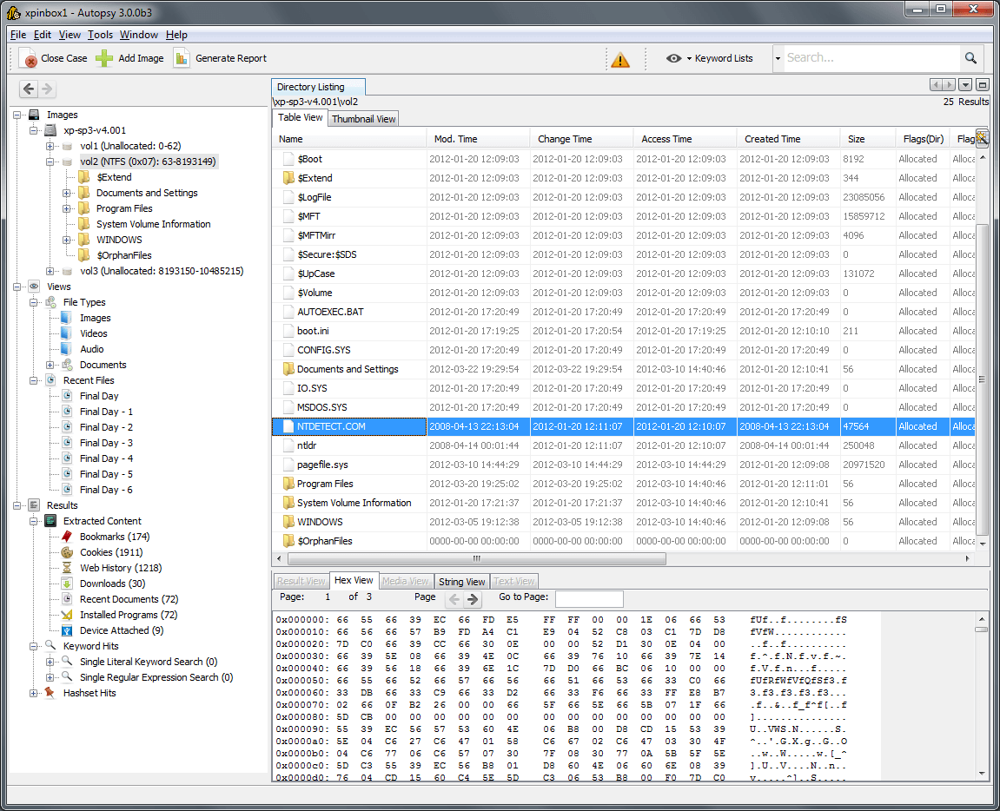

Autopsy
Autopsy — программа с открытым исходным кодом и графическим интерфейсом для эффективного криминалистического исследования жестких дисков и смартфонов. Тысячи людей пользуются Autopsy, чтобы разобраться в том, что же действительно случилось с компьютером.
Специалисты крупных компаний и военные широко применяют Autopsy в работе. Ниже некоторые из функций Autopsy:
- анализ электронных писем;
- определение типа файла;
- воспроизведение мультимедиа;
- анализ реестра;
- восстановление фотографий с карты памяти;
- извлечение информации о геолокации и фотоаппарате из JPEG-файлов;
- извлечение данных о сетевой активности из браузера;
- отображение системных событий в графическом интерфейсе;
- хронологический анализ;
- извлечение данных из устройств на Android: SMS, журнал звонков, контакты, и т.д.
С помощью инструмента можно генерировать отчеты в форматах HTML и XLS.
Источник: https://habr.com/company/hosting-cafe/blog/315278/